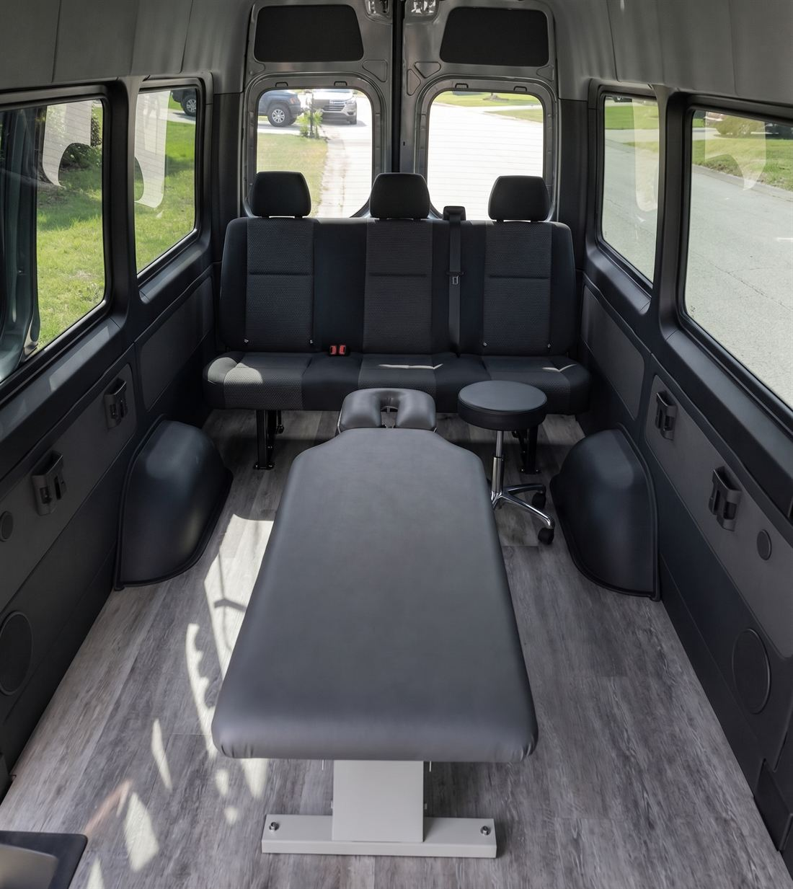

What to expect
How a mobile visit works
If you have only ever been to a clinic, this is a little different — and simpler than you might expect. Here is exactly how it goes.
-
Call or text to book
Reach Dr. Neely directly at 415.563.1046. There is no front desk and no booking software — you talk to the doctor. Appointment only.
-
Agree on a time and place
Dr. Neely will confirm a meeting spot near you and send you the exact location. Most patients pick somewhere they can walk to or park easily.
-
Fill in your new patient form
First visit only. Download the form, complete it at home, and bring it with you. Please do not email it — handing it over in person keeps your health information off email entirely.
-
Meet at the van
The treatment van is a high-roof Sprinter with a full chiropractic table inside. You can stand up straight in it. It is private, heated, and set up like a treatment room.
-
Consultation, exam, and adjustment
Dr. Neely will go through your history, examine you, and explain what she finds before doing anything. Treatment uses hands-on adjustment and an Activator instrument, depending on what suits you.
-
Leave with a plan
You will get specific exercises and practical advice to use between visits, plus a clear sense of whether you need to come back and how often.
Inside the van
The most common question from new patients is a fair one: what is it actually like? It is an extended-wheelbase, high-roof Sprinter fitted out as a treatment room — a proper adjusting table, full standing headroom, clean linens, and privacy.

Dr. Neely will tell you what the van looks like and where exactly it will be parked when she confirms your appointment, so you are never wandering a parking lot looking for it.
Common questions
What should I wear?
Comfortable clothes you can move in. Nothing restrictive, and avoid heavy belts or bulky layers.
How long does a visit take?
A first visit runs longer because of the consultation and exam. Follow-up visits are shorter.
What does it cost?
Please call or text 415.563.1046 to discuss fees and insurance questions.
Do you come to my home or office?
Appointments are arranged at agreed meeting points. Call to discuss what works for your situation.
What if it rains?
Treatment happens inside the van, so weather is not a problem. You will only be outside for the few steps between your car and the door.
Can I bring my kids, or come as a couple?
Yes — mention it when you book so Dr. Neely can allow enough time.
Ready to book?
Call or text Dr. Neely directly. She answers her own phone.